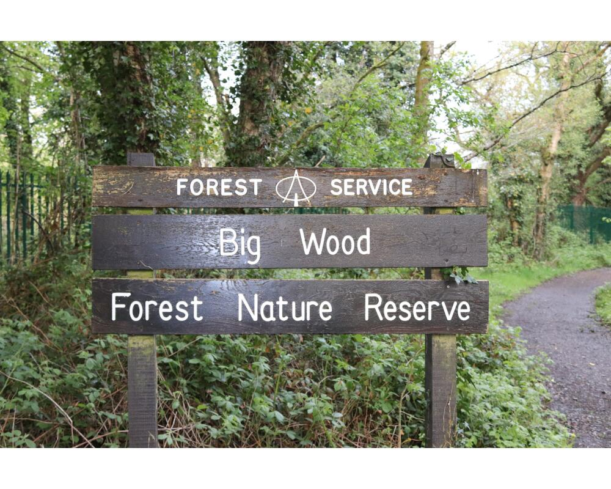

This forest links to the Lagan Tow Path, so you could actually combine one of the walks along the canal with this one.
Belvoir Park Forest is well marked out with maps located in the car park.
From the car park, follow the blue trail.

Follow the red trail which takes you around the perimeter of the forest park. If you have more time, and want to make this route longer you can explore the inner tracks of the forest.
